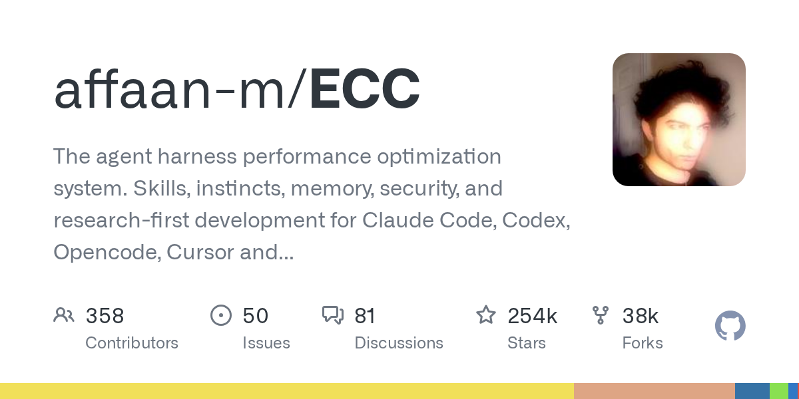
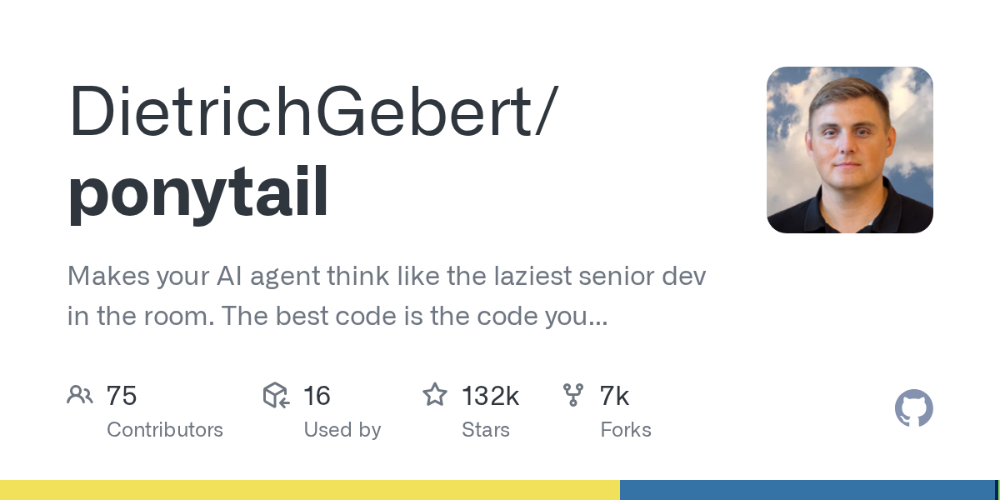
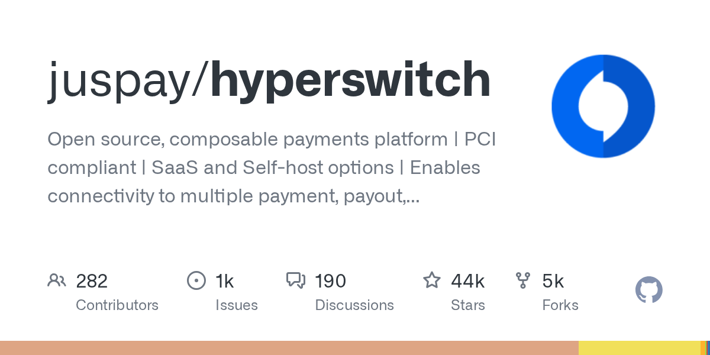
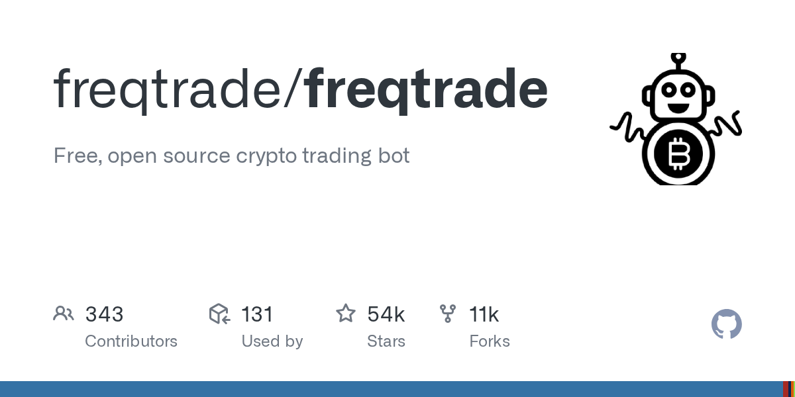

01 이번 주 급상승
에이전트 작업 순서를 고정하는 ECC
“설치 한 번으로 에이전트의 일하는 방식을 고정할 수 있다. 같은 지시를 매번 프롬프트에 다시 쓰지 않아도 된다.”
Weekly GitHub Brief
이번 주에는 코딩 에이전트의 작업 순서를 고정하고, 여러 에이전트를 한 흐름으로 묶는 도구가 눈에 띄었다. 플러그인으로 기능을 붙이는 틀과 불필요한 코드를 덜 쓰게 하는 도구도 올라와, 에이전트가 ‘한 번 호출하는 챗봇’보다 작업 절차를 따라 움직이도록 만드는 방향이 강해졌다. 인프라 쪽에서는 토큰 사용량을 로컬에서 줄이는 압축기가 보였고, 금융·트레이딩 쪽에서는 결제 사업자를 갈아타기 쉽게 하는 플랫폼과 거래 전략 자동화 봇, 역할을 나눈 AI 트레이딩 틀이 함께 올라와 실행과 전환 비용을 낮추는 흐름이 이어졌다. 라이선스는 공개형 기반의 실험이 많았고, 내부에서는 에이전트 작업 순서 고정 도구를 먼저 붙여 개발 흐름이 얼마나 안정되는지 시험해 볼 만하다.
Editor's Pick
01 이번 주 급상승
“설치 한 번으로 에이전트의 일하는 방식을 고정할 수 있다. 같은 지시를 매번 프롬프트에 다시 쓰지 않아도 된다.”
02 이번 주 급상승
“이 도구는 모든 것을 플러그인으로 다루는 구조를 앞세운다. 필요한 기능을 끼워 넣는 방식이라 확장 방향이 분명하다.”
03 이번 주 급상승
“코딩 에이전트가 생산성을 높인다는 말과 달리, 현장에서는 불필요한 코드와 의존성을 늘리는 문제가 자주 나온다. 이 저장소는 바로 그 지점을 겨냥한다.”
이번 주 가장 뜨거웠던 저장소 하나를 골랐습니다. 아래 섹션에도 그대로 실려 있습니다.
TauricResearch/TradingAgents
여러 LLM 에이전트가 역할을 나눠 금융 시장을 분석하는 프레임워크다.
“애널리스트, 리서처, 트레이더, 리스크 관리 역할을 나눠 시장을 평가한다. 각 에이전트가 토론하며 결정을 좁혀 가는 구조다. 분석 날짜와 종목, 모델 제공자를 CLI에서 고를 수 있다.”
★ 103,424이번 주 +718PythonApache-2.0 사내 사용 가능릴리스 v0.4.0 (08.31)최근 활동 09.07테스트

지난 7일 동안 스타가 빠르게 늘었거나 새로 등장해 주목받는 저장소입니다.
affaan-m/ECC
Claude Code, Codex 같은 코딩 에이전트에 작업 절차와 도구 상자를 붙여 주는 저장소다.
“설치 한 번으로 에이전트의 일하는 방식을 고정할 수 있다. 같은 지시를 매번 프롬프트에 다시 쓰지 않아도 된다. 계획, 테스트, 구현, 리뷰, 검증, 기억, 개선 순서를 도구 안에 넣어 둔다.”
★ 254,303이번 주 +3,398JavaScriptMIT 사내 사용 가능릴리스 v2.2.1 (09.08)최근 활동 09.09테스트예제AGENTS.md

deepseek-ai/deepseek-harness
DeepSeek AI가 만든 오픈소스 에이전트 하네스다.
“이 도구는 모든 것을 플러그인으로 다루는 구조를 앞세운다. 필요한 기능을 끼워 넣는 방식이라 확장 방향이 분명하다. 다만 개발자 프리뷰 단계라 호환성이 깨지는 변경이 계속 나올 수 있다.”
★ 216,262이번 주 +2,361TypeScriptMIT 사내 사용 가능최근 활동 09.08AGENTS.md

DietrichGebert/ponytail
코딩 에이전트가 불필요한 코드와 도구를 덜 추가하게 유도하는 저장소다.
“코딩 에이전트가 생산성을 높인다는 말과 달리, 현장에서는 불필요한 코드와 의존성을 늘리는 문제가 자주 나온다. 이 저장소는 바로 그 지점을 겨냥한다. 최근 릴리스에서는 기본 모드가 재시작 뒤에도 유지되도록 바뀌었고, 현재 활성 수준을 확인하는 동작도 손봤다.”
★ 132,204이번 주 +3,184JavaScriptMIT 사내 사용 가능릴리스 v4.9.0 (08.07)최근 활동 09.07테스트예제AGENTS.md

이번 주 안에 정식 릴리스를 낸 프로젝트의 의미 있는 버전 변화입니다.
juspay/hyperswitch
여러 결제 사업자와 정산·라우팅·토큰 보관 기능을 묶어 주는 오픈소스 결제 인프라다.
“이 저장소는 결제 게이트웨이 하나를 대체하는 단일 연결 도구보다 모듈 구성이 넓다. 전체 결제 스택으로 쓸 수 있지만, 라우팅이나 Vault처럼 필요한 부분만 따로 붙이는 방식도 지원한다. 기존 Vault를 그대로 두고 연결하는 bring-your-own-vault 방식도 안내한다.”
★ 43,595이번 주 +11RustApache-2.0 사내 사용 가능릴리스 v1.126.0 (08.24)최근 활동 09.09

freqtrade/freqtrade
파이썬으로 만든 오픈소스 가상자산 거래 봇이다.
“거래에 바로 돈을 넣기 전에 Dry-Run으로 먼저 돌려야 한다. 백테스트와 그래프 확인, 자금 관리, 머신러닝 기반 전략 최적화 기능도 들어 있다. 운영체제는 Windows, macOS, Linux를 지원한다.”
★ 54,177이번 주 +90PythonGPL-3.0 법무 확인릴리스 2026.8 (08.31)최근 활동 09.08테스트

에이전트 프레임워크, MCP 서버, 코딩 보조, LLM 앱 개발 도구입니다.
TauricResearch/TradingAgents
여러 LLM 에이전트가 역할을 나눠 금융 시장을 분석하는 프레임워크다.
“애널리스트, 리서처, 트레이더, 리스크 관리 역할을 나눠 시장을 평가한다. 각 에이전트가 토론하며 결정을 좁혀 가는 구조다. 분석 날짜와 종목, 모델 제공자를 CLI에서 고를 수 있다.”
★ 103,424이번 주 +718PythonApache-2.0 사내 사용 가능릴리스 v0.4.0 (08.31)최근 활동 09.07테스트
code-yeongyu/oh-my-openagent
여러 코딩 에이전트와 모델을 한 작업 흐름으로 묶는 도구다.
“이 저장소는 한 코딩 에이전트만 강화하는 방식보다, 여러 호스트와 여러 모델을 오케스트레이션(여러 도구를 묶어 제어)하는 데 무게를 둔다. OpenCode에는 기능이 많은 Ultimate를, Codex CLI에는 제약에 맞춘 Light를 따로 낸 점이 눈에 띈다.”
★ 68,825이번 주 +65TypeScript미표기 확인 필요릴리스 v5.0.0-beta.49 (09.08)최근 활동 09.08테스트AGENTS.md

추론 서빙, 런타임, 양자화, GPU 커널, 벡터 DB 등 모델을 돌리는 바탕입니다.
headroomlabs-ai/headroom
AI 에이전트가 읽는 로그, 파일, RAG 청크를 LLM에 보내기 전에 압축해 주는 도구다.
“압축은 로컬에서 돌아가며, 프롬프트나 파일 내용은 압축을 위해 외부로 보내지 않는다. 프록시로 붙이면 코드 수정 없이 쓸 수 있다. 원문은 로컬에 저장해 두고 필요할 때 다시 꺼낸다.”
★ 70,806이번 주 +1,691PythonApache-2.0 사내 사용 가능릴리스 v0.37.0 (08.27)최근 활동 09.09테스트예제